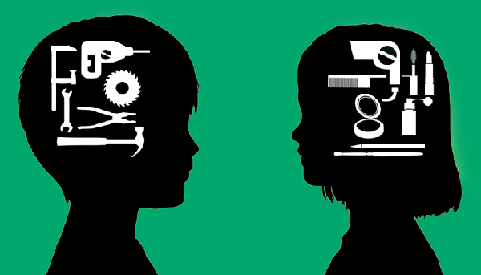
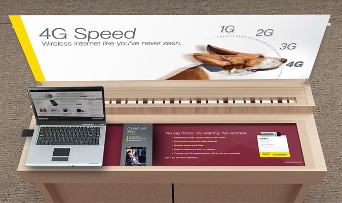

Gender is a significant factor within design, both when it comes to design, the production process, consummation and everything between.
Our world has been predominantly designed with the male user in mind. For example, a study from the American Journal of Public Health suggests that cars put women at 47% more risk of seat belt injury than men in car crashes, because air bags and seat belts are designed primarily with men in mind.
A male dummy is often used throughout testing, and the results lead to a safer experience for men. However, women are often shorter than their male counterparts and weigh less, therefore less force is required to keep them in the car during an accident.
Moreover, despite the powerful economic influence of women today, there are many areas where women are inadequately served, where they feel products are not designed for them, communication does not speak to them and customer service does not understand them. In fact, a recent study discovered that some 40% of women do not identify with the images of them portrayed in ads, and 30% think they show a male view of women.
Everyday products and places, such as public restrooms, hospitals, classrooms and public transportation; toys, packaging, electronics etc…are all gender biased. However, people who are unaffected by gender-biased designs and never experience them, i.e. the average white male—who are typically the main designers behind these designs, may not see an issue with them.
Everyone has some form of unconscious bias, but most people have no idea of how biased they actually are. The Geena Davis Institute for Gender in Media found that white men viewing a crowd with 17% women perceived it to be 50-50, and when it was 33% women, they perceived it to be majority women. A simple overestimation like this illustrates how difficult it can be to see the world from another’s perspective.
In today’s modern world, equality should not simply be about obtaining the same status as a man and having to fit into a world designed by and for men. On the contrary, women should now aspire to a world designed to suit both genders, one where feminine needs and traits are valued as much as traditionally masculine ones. As the world evolves to design itself around the needs of both genders, it will take the worlds of industrial design, advertising, product design and customer experience with it.
A recent example of this in marketing would be Sprint. A few years back, Sprint realised that although women make up over half of their in-store traffic and influence 80% of purchases, their consumer interfaces continued to revolve around technology and devices, served with a heavy dose of industry-specific terminology. So they overhauled everything from their retail design to their customer service interactions to better address the needs of female customers.
Communications were modified to include a more lifestyle-focused narrative and were adjusted to be more consumer focused, avoiding jargon and instead focusing more on consumer benefits and relevance. The in-store environment was redesigned to acknowledge females and mirror back a respectful image to her. Ultimately, although these changes were inspired by the slightly different needs of one gender, it ended up making things better for everyone.